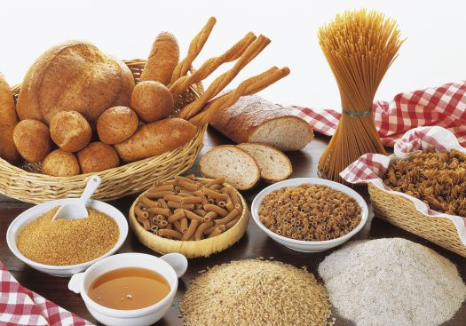
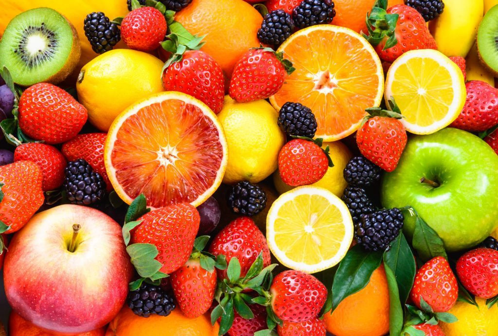

Categorias de Alimentos
Carboidratos
Representa a base da pirâmide, indicando os alimentos que fornecem energia, pois ao serem consumidos os carboidratos são convertidos em açúcar no sangue. O consumo na forma integral é recomendado pelo número de fibras, vitaminas e minerais que deixam essa absorção mais lenta. As principais fontes de carboidrato são: arroz, pão, batata, massa, mandioca, cereais, etc.
Saber mais..Verduras e legumes

Está acima da base da pirâmide, representando as fontes de fibras, vitaminas e minerais que ajudam no controle e funcionamento do corpo. O consumo de verduras e legumes melhora o hábito intestinal. Alguns alimentos deste grupo são: brócolis, couve, repolho, abobrinha, etc.
Saber mais..Carnes e ovos

Assim como os leites e derivados, este grupo está na parte intermediária da pirâmide e representa a fonte de proteína de origem animal. Os alimentos deste grupo têm como característica serem ricos em ferro e vitaminas B6 e B12, prevenindo anemias. Os principais alimentos deste grupo são: peixe, frango, carne, ovos, etc.
Saber mais..Leguminosas e oleaginosas

As leguminosas completam a parte intermediária da pirâmide, representando as fontes de proteína vegetal. Também são excelentes fontes de fibras. Compõem esse grupo: feijão, soja, lentilha, grão de bico, castanhas etc.
Saber mais..Frutas
As frutas estão ao lado das verduras e legumes, representando outro tipo de fonte de fibras, vitaminas e minerais. A frutose (açúcar da fruta) aumenta o nível de açúcar no sangue de forma rápida. Alguns exemplos de frutas são: abacaxi, maçã, banana, kiwi, caju, acerola, etc. Além das opções tradicionais, as frutas exóticas se tornam uma opção para variar as frutas consumidas.
Saber mais..Leite e derivados

Localizado na parte intermediária da pirâmide, o leite e seus derivados são uma excelente fonte de cálcio, que é essencial para a constituição óssea e dos dentes. Além disso, também fornecem proteínas ao organismo. Os principais alimentos deste grupo são: queijo, leite, iogurtes, etc.
Saber mais..Óleos e gorduras

Sendo um dos mais importantes, os óleos e gorduras fazem parte do topo da pirâmide. Os alimentos deste grupo são fontes de energia e são responsáveis pelo transporte de vitaminas do complexo B. São ricos em calorias e seu consumo deve ser controlado. São alimentos desse grupo: azeite, manteiga, óleo de soja, etc.
Saber mais..Açúcares e doces

Dividindo o topo da pirâmide alimentar, estão os açúcares e doces. São alimentos ricos em carboidratos simples, não possuem fibras e apresentam poucos nutrientes. Seu consumo deve ser moderado. Os alimentos que compõem esse grupo são: açúcar, mel, chocolate, sorvete, bolo, etc.
Saber mais..